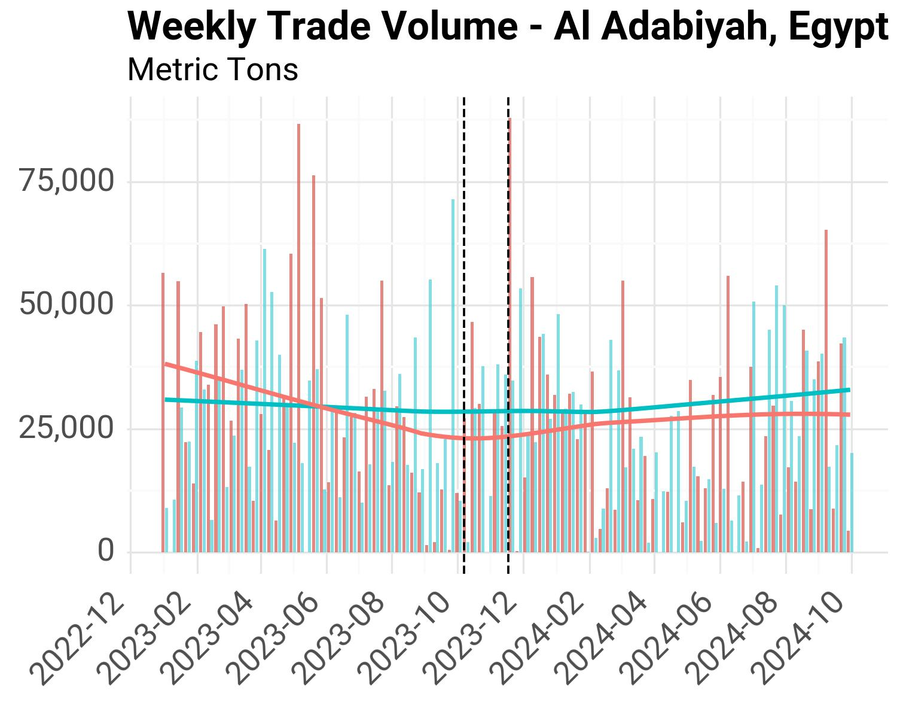
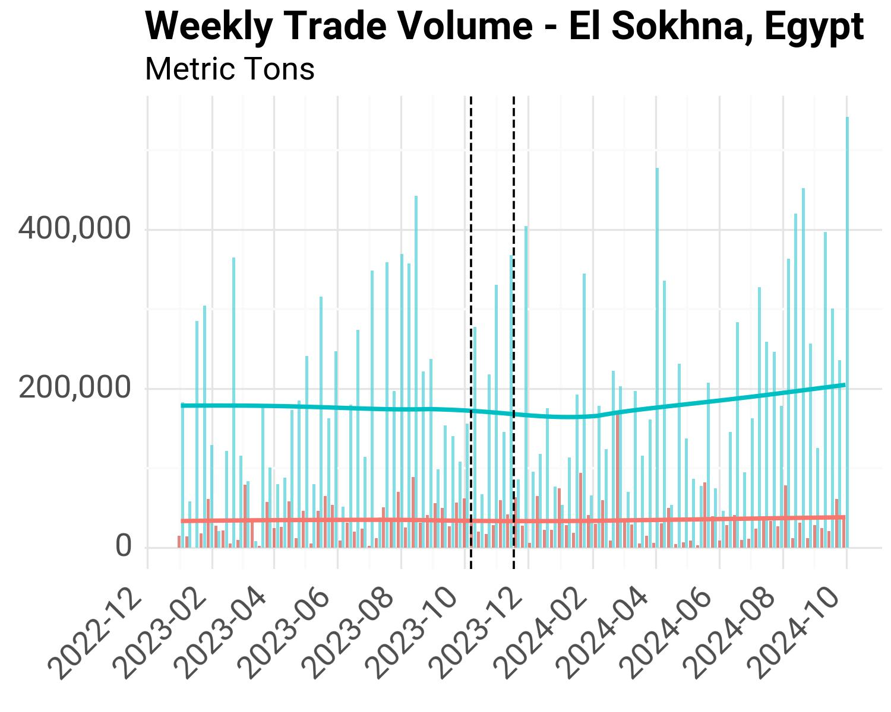
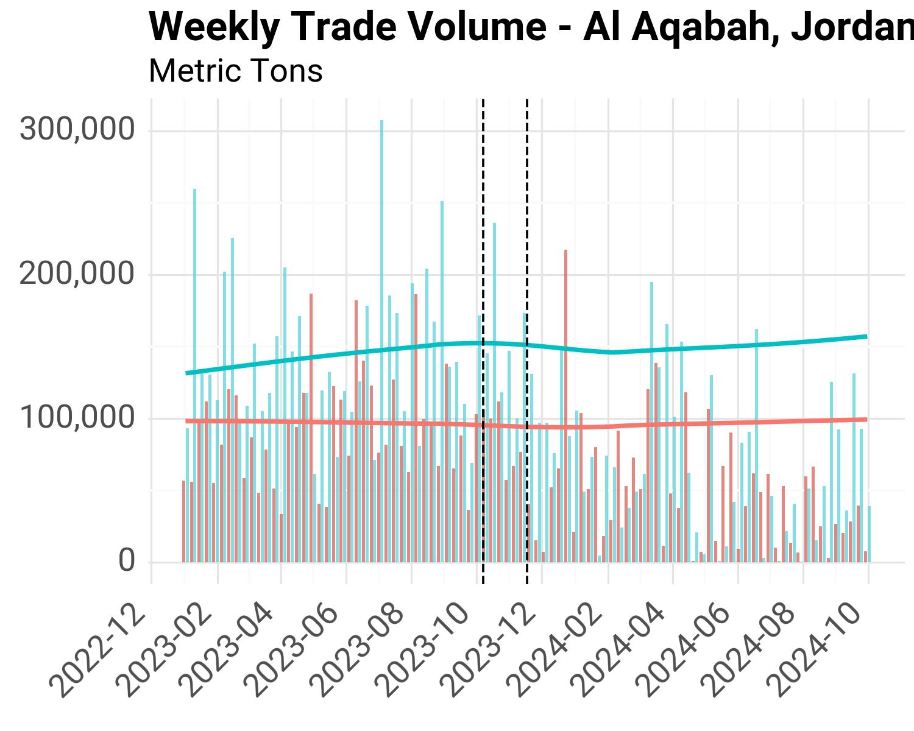
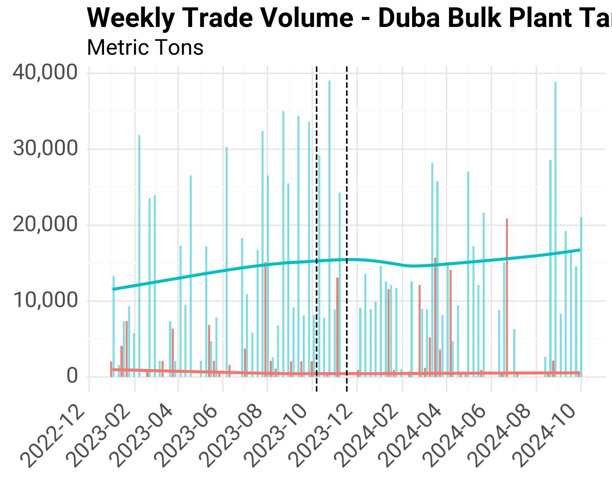
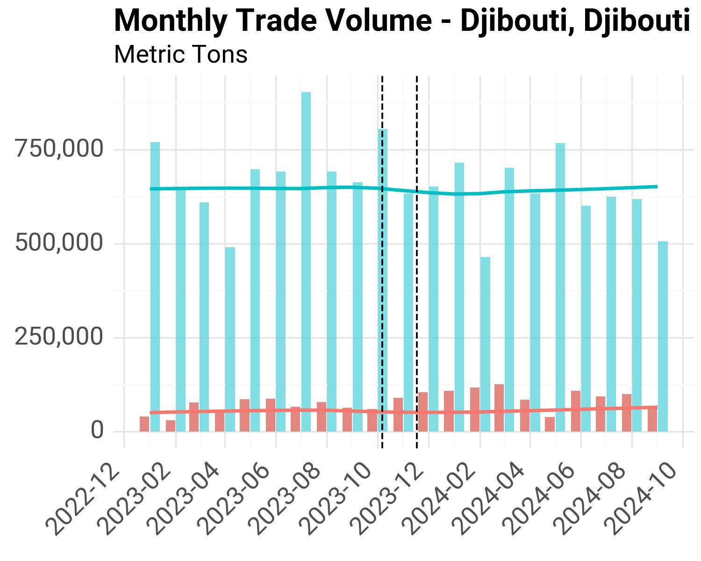
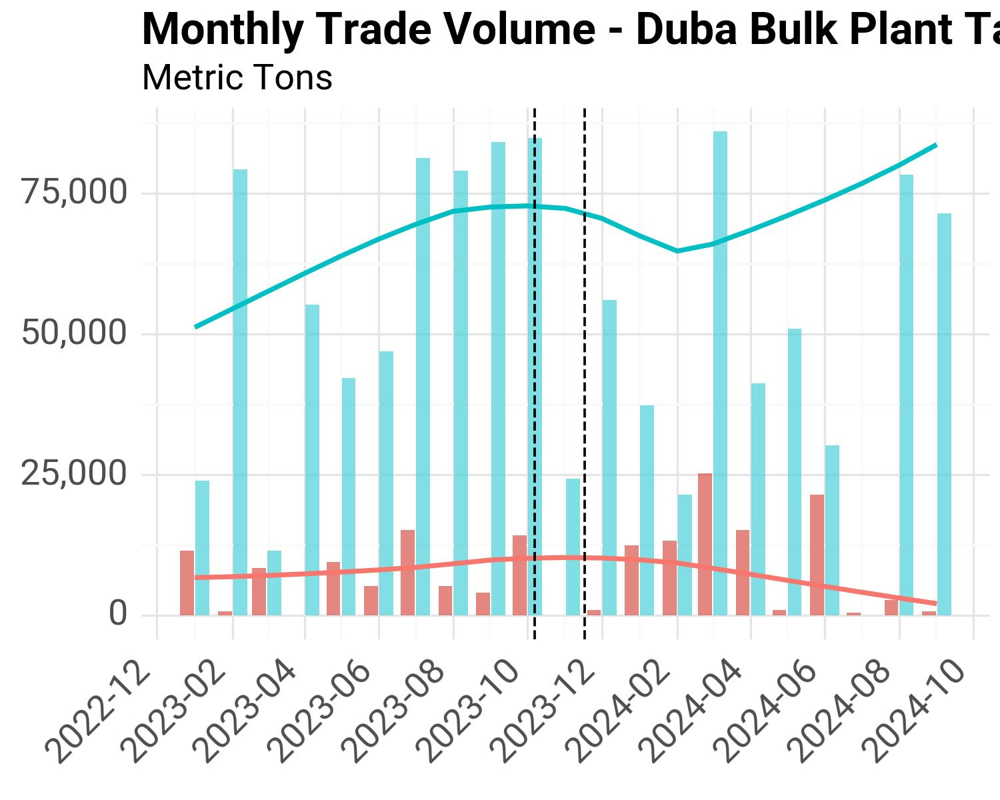
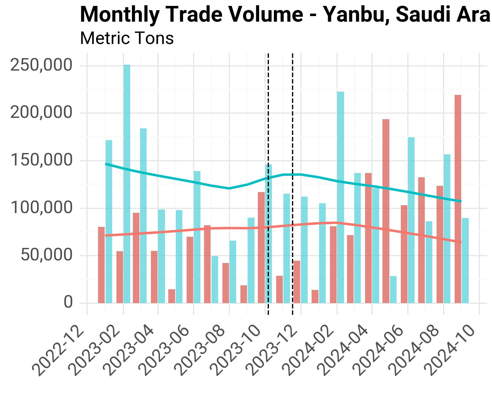
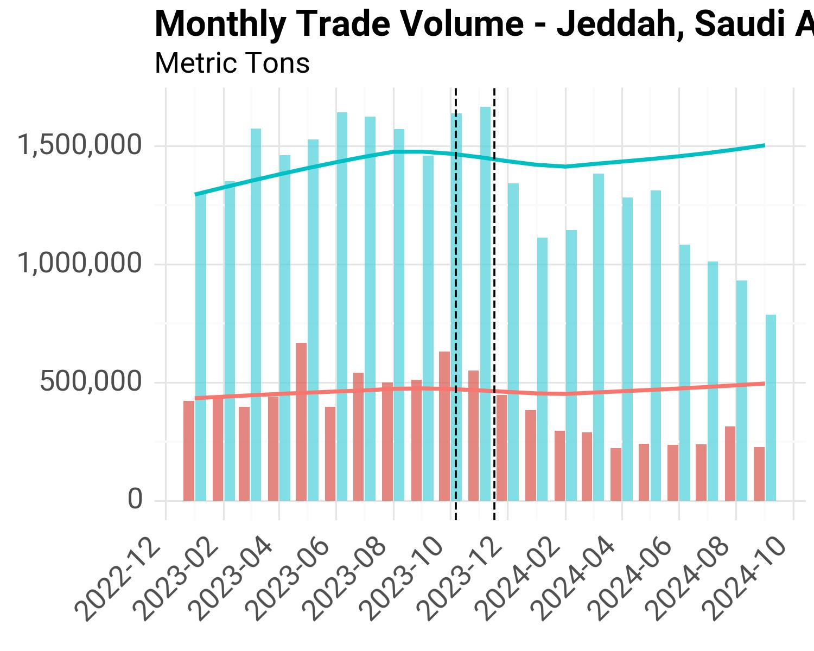
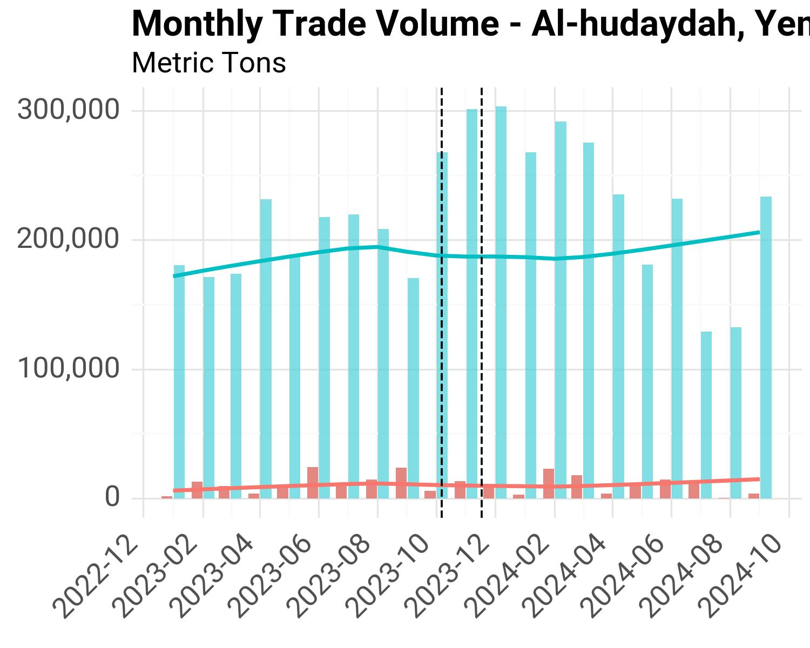

Port Call Trends Monitor#
This section examines how AIS-derived trade estimates have evolved in ports along the Red Sea given the conflict in the Middle East and the escalating attacks in the Red Sea.
Data#
We process daily estimated trade (imports and exports) since 2019 from the IMF’s PortWatch platform for e following ports: Aden, Al Ahmadi, Al Aqabah, Al Mukalla, As Suways, Djibouti, Duba. Duba Bulk Plant Tanker Terminal, El-Adabiya, Jiddah, Jiddah Oil, King Fahd Port, North Ain Sukhna Port, Rabigh, Safaga, and Yanbu. As of this date, the latest data point available is February 19th, 2024.
The location of these ports can be verified in the following interactive map within the notebook.
Since the data is daily and there multiple days with no trade, we first resample the data to weekly sums. The following charts show the estimated trade volumes by port. The vertical dotted lines mark the beginning of key periods of interest highlighted by the team.
Middle East conflict: October 7th
Red Sea crisis: November 17th
Weekly Trade Charts#
Djibouti#

Egypt#



Jordan#

Saudi Arabia#



Yemen#


Methodology#
Given the numerous weeks with no trade data in the PorWatch dataset, we resample the data to the monthly frequency using the sum value.
Reference Period#
We use the same reference period as in the choke points analysis: January 1st 2022 up to October 6th 2023. We calculate monthly historical averages based on this time period.
The following charts show trade volume for each port, separating imports and exports, and includes trend lines from the historical average data (blue for imports, red for exports).
Djibouti#

Egypt#


Jordan#

Saudi Arabia#






Yemen#


Summary Statistics#
From this monthly data, we follow a similar methodology as the last section of the choke points analysis, and calculate monthly average values for each time period of interest.
Baseline: January 1st, 2022 – October 6th, 2023
Middle East Conflict: October 7th, 2023 - November 16th, 2023
Red Sea Crisis: November 17th, 2023 - February 19th, 2024
The tables below are also accessible through the Project’s Sharepoint Folder.
Monthly Averages by Time Period#
Country |
Port |
Period |
Cargo Import |
Cargo Export |
Tanker Import |
Tanker Export |
Total Import |
Total Export |
|---|---|---|---|---|---|---|---|---|
Djibouti |
Djibouti |
Reference |
496,248 |
36,378 |
158,454 |
12,919 |
654,701 |
49,297 |
Djibouti |
Djibouti |
Middle East Conflict |
506,081 |
49,468 |
120,205 |
4,083 |
626,285 |
53,550 |
Djibouti |
Djibouti |
Red Sea Crisis |
401,003 |
77,485 |
139,392 |
17,145 |
540,395 |
94,630 |
Egypt |
As Suways |
Reference |
4,648 |
5,132 |
783 |
1,127 |
5,430 |
6,259 |
Egypt |
As Suways |
Middle East Conflict |
5,706 |
0 |
0 |
0 |
5,706 |
0 |
Egypt |
As Suways |
Red Sea Crisis |
7,646 |
2,240 |
0 |
10,066 |
7,646 |
12,305 |
Egypt |
El-Adabiya |
Reference |
56,300 |
108,538 |
69,385 |
3,448 |
125,684 |
111,986 |
Egypt |
El-Adabiya |
Middle East Conflict |
63,403 |
151,135 |
83,762 |
0 |
147,165 |
151,135 |
Egypt |
El-Adabiya |
Red Sea Crisis |
28,988 |
94,023 |
53,572 |
2,974 |
82,560 |
96,997 |
Egypt |
North Ain Sukhna Port |
Reference |
417,506 |
71,741 |
308,919 |
72,642 |
726,425 |
144,382 |
Egypt |
North Ain Sukhna Port |
Middle East Conflict |
478,392 |
161,099 |
173,284 |
33,503 |
651,676 |
194,602 |
Egypt |
North Ain Sukhna Port |
Red Sea Crisis |
244,003 |
85,297 |
173,403 |
18,870 |
417,407 |
104,167 |
Egypt |
Safaga |
Reference |
73,386 |
75,320 |
93 |
0 |
73,480 |
75,320 |
Egypt |
Safaga |
Middle East Conflict |
87,906 |
84,162 |
0 |
0 |
87,906 |
84,162 |
Egypt |
Safaga |
Red Sea Crisis |
108,730 |
45,784 |
0 |
0 |
108,730 |
45,784 |
Jordan |
Al Aqabah |
Reference |
505,767 |
392,247 |
120,238 |
34,849 |
626,004 |
427,096 |
Jordan |
Al Aqabah |
Middle East Conflict |
323,566 |
190,369 |
94,285 |
33,673 |
417,850 |
224,042 |
Jordan |
Al Aqabah |
Red Sea Crisis |
211,418 |
183,203 |
33,706 |
12,891 |
245,124 |
196,094 |
Saudi Arabia |
Duba |
Reference |
11,470 |
12,741 |
0 |
0 |
11,470 |
12,741 |
Saudi Arabia |
Duba |
Middle East Conflict |
9,502 |
0 |
0 |
0 |
9,502 |
0 |
Saudi Arabia |
Duba |
Red Sea Crisis |
17,484 |
9,306 |
0 |
0 |
17,484 |
9,306 |
Saudi Arabia |
Duba Bulk Plant Tanker Terminal |
Reference |
0 |
0 |
66,926 |
6,994 |
66,926 |
6,994 |
Saudi Arabia |
Duba Bulk Plant Tanker Terminal |
Middle East Conflict |
0 |
0 |
24,267 |
0 |
24,267 |
0 |
Saudi Arabia |
Duba Bulk Plant Tanker Terminal |
Red Sea Crisis |
0 |
0 |
37,549 |
3,833 |
37,549 |
3,833 |
Saudi Arabia |
Jiddah |
Reference |
1,116,323 |
433,499 |
304,485 |
17,406 |
1,420,808 |
450,905 |
Saudi Arabia |
Jiddah |
Middle East Conflict |
1,241,235 |
496,755 |
309,465 |
37,136 |
1,550,700 |
533,890 |
Saudi Arabia |
Jiddah |
Red Sea Crisis |
672,842 |
280,059 |
317,287 |
21,873 |
990,128 |
301,932 |
Saudi Arabia |
Jiddah Oil |
Reference |
0 |
0 |
336,104 |
4,674 |
336,104 |
4,674 |
Saudi Arabia |
Jiddah Oil |
Middle East Conflict |
0 |
0 |
428,958 |
0 |
428,958 |
0 |
Saudi Arabia |
Jiddah Oil |
Red Sea Crisis |
0 |
0 |
213,399 |
29,017 |
213,399 |
29,017 |
Saudi Arabia |
King Fahd Port |
Reference |
72,768 |
134,102 |
486,407 |
1,929,692 |
559,175 |
2,063,794 |
Saudi Arabia |
King Fahd Port |
Middle East Conflict |
44,789 |
104,329 |
249,356 |
1,865,661 |
294,144 |
1,969,990 |
Saudi Arabia |
King Fahd Port |
Red Sea Crisis |
71,688 |
99,701 |
230,213 |
1,328,270 |
301,901 |
1,427,971 |
Saudi Arabia |
Rabigh |
Reference |
515,971 |
384,649 |
219,304 |
305,019 |
735,276 |
689,669 |
Saudi Arabia |
Rabigh |
Middle East Conflict |
443,722 |
364,038 |
165,869 |
353,272 |
609,591 |
717,310 |
Saudi Arabia |
Rabigh |
Red Sea Crisis |
163,975 |
154,983 |
171,208 |
178,847 |
335,183 |
333,830 |
Saudi Arabia |
Yanbu |
Reference |
127,704 |
76,367 |
9,543 |
346 |
137,247 |
76,713 |
Saudi Arabia |
Yanbu |
Middle East Conflict |
89,140 |
20,167 |
8,558 |
0 |
97,699 |
20,167 |
Saudi Arabia |
Yanbu |
Red Sea Crisis |
53,960 |
34,242 |
9,699 |
0 |
63,660 |
34,242 |
Yemen |
Aden |
Reference |
216,989 |
9,666 |
39,819 |
5,311 |
256,807 |
14,976 |
Yemen |
Aden |
Middle East Conflict |
163,033 |
3,116 |
28,444 |
1,143 |
191,477 |
4,259 |
Yemen |
Aden |
Red Sea Crisis |
126,452 |
2,986 |
21,000 |
0 |
147,452 |
2,986 |
Yemen |
Al Ahmadi |
Reference |
135,216 |
16,457 |
48,057 |
3,093 |
183,273 |
19,549 |
Yemen |
Al Ahmadi |
Middle East Conflict |
231,323 |
12,617 |
61,260 |
18,770 |
292,584 |
31,387 |
Yemen |
Al Ahmadi |
Red Sea Crisis |
204,161 |
4,418 |
26,095 |
2,635 |
230,256 |
7,052 |
Yemen |
Al Mukalla |
Reference |
18,541 |
3,350 |
7,391 |
1,223 |
25,932 |
4,574 |
Yemen |
Al Mukalla |
Middle East Conflict |
17,786 |
531 |
19,324 |
0 |
37,110 |
531 |
Yemen |
Al Mukalla |
Red Sea Crisis |
6,605 |
0 |
9,136 |
0 |
15,741 |
0 |
Monthly Averages by Time Period, % Change from Baseline#
The following table shows the difference in monthly average values (% change from baseline period).
Country |
Port |
Period |
Cargo Import |
Cargo Export |
Tanker Import |
Tanker Export |
Total Import |
Total Export |
|---|---|---|---|---|---|---|---|---|
Yemen |
Aden |
Middle East Conflict |
-24.87% |
-67.76% |
-28.57% |
-78.48% |
-25.44% |
-71.56% |
Yemen |
Aden |
Red Sea Crisis |
-41.72% |
-69.11% |
-47.26% |
-100.00% |
-42.58% |
-80.06% |
Yemen |
Al Ahmadi |
Middle East Conflict |
71.08% |
-23.33% |
27.47% |
506.90% |
59.64% |
60.55% |
Yemen |
Al Ahmadi |
Red Sea Crisis |
50.99% |
-73.16% |
-45.70% |
-14.81% |
25.64% |
-63.93% |
Yemen |
Al Mukalla |
Middle East Conflict |
-4.07% |
-84.15% |
161.44% |
-100.00% |
43.10% |
-88.39% |
Yemen |
Al Mukalla |
Red Sea Crisis |
-64.38% |
-100.00% |
23.61% |
-100.00% |
-39.30% |
-100.00% |
Jordan |
Al Aqabah |
Middle East Conflict |
-36.02% |
-51.47% |
-21.58% |
-3.37% |
-33.25% |
-47.54% |
Jordan |
Al Aqabah |
Red Sea Crisis |
-58.20% |
-53.29% |
-71.97% |
-63.01% |
-60.84% |
-54.09% |
Egypt |
As Suways |
Middle East Conflict |
22.77% |
-100.00% |
-100.00% |
-100.00% |
5.08% |
-100.00% |
Egypt |
As Suways |
Red Sea Crisis |
64.50% |
-56.36% |
-100.00% |
793.46% |
40.80% |
96.61% |
Egypt |
El-Adabiya |
Middle East Conflict |
12.62% |
39.25% |
20.72% |
-100.00% |
17.09% |
34.96% |
Egypt |
El-Adabiya |
Red Sea Crisis |
-48.51% |
-13.37% |
-22.79% |
-13.74% |
-34.31% |
-13.38% |
Egypt |
North Ain Sukhna Port |
Middle East Conflict |
14.58% |
124.56% |
-43.91% |
-53.88% |
-10.29% |
34.78% |
Egypt |
North Ain Sukhna Port |
Red Sea Crisis |
-41.56% |
18.90% |
-43.87% |
-74.02% |
-42.54% |
-27.85% |
Egypt |
Safaga |
Middle East Conflict |
19.79% |
11.74% |
-100.00% |
nan% |
19.63% |
11.74% |
Egypt |
Safaga |
Red Sea Crisis |
48.16% |
-39.21% |
-100.00% |
nan% |
47.97% |
-39.21% |
Djibouti |
Djibouti |
Middle East Conflict |
1.98% |
35.98% |
-24.14% |
-68.40% |
-4.34% |
8.63% |
Djibouti |
Djibouti |
Red Sea Crisis |
-19.19% |
113.00% |
-12.03% |
32.71% |
-17.46% |
91.96% |
Saudi Arabia |
Duba |
Middle East Conflict |
-17.15% |
-100.00% |
nan% |
nan% |
-17.15% |
-100.00% |
Saudi Arabia |
Duba |
Red Sea Crisis |
52.44% |
-26.96% |
nan% |
nan% |
52.44% |
-26.96% |
Saudi Arabia |
Duba Bulk Plant Tanker Terminal |
Middle East Conflict |
nan% |
nan% |
-63.74% |
-100.00% |
-63.74% |
-100.00% |
Saudi Arabia |
Duba Bulk Plant Tanker Terminal |
Red Sea Crisis |
nan% |
nan% |
-43.89% |
-45.20% |
-43.89% |
-45.20% |
Saudi Arabia |
Jiddah |
Middle East Conflict |
11.19% |
14.59% |
1.64% |
113.36% |
9.14% |
18.40% |
Saudi Arabia |
Jiddah |
Red Sea Crisis |
-39.73% |
-35.40% |
4.20% |
25.67% |
-30.31% |
-33.04% |
Saudi Arabia |
Jiddah Oil |
Middle East Conflict |
nan% |
nan% |
27.63% |
-100.00% |
27.63% |
-100.00% |
Saudi Arabia |
Jiddah Oil |
Red Sea Crisis |
nan% |
nan% |
-36.51% |
520.83% |
-36.51% |
520.83% |
Saudi Arabia |
King Fahd Port |
Middle East Conflict |
-38.45% |
-22.20% |
-48.74% |
-3.32% |
-47.40% |
-4.55% |
Saudi Arabia |
King Fahd Port |
Red Sea Crisis |
-1.48% |
-25.65% |
-52.67% |
-31.17% |
-46.01% |
-30.81% |
Saudi Arabia |
Rabigh |
Middle East Conflict |
-14.00% |
-5.36% |
-24.37% |
15.82% |
-17.09% |
4.01% |
Saudi Arabia |
Rabigh |
Red Sea Crisis |
-68.22% |
-59.71% |
-21.93% |
-41.37% |
-54.41% |
-51.60% |
Saudi Arabia |
Yanbu |
Middle East Conflict |
-30.20% |
-73.59% |
-10.32% |
-100.00% |
-28.82% |
-73.71% |
Saudi Arabia |
Yanbu |
Red Sea Crisis |
-57.75% |
-55.16% |
1.64% |
-100.00% |
-53.62% |
-55.36% |
Summary Charts#
The following charts sort all ports by the greatest differences (absolute and relative) observed in the tables above. We use the monthly averages calculated for the Red Sea Crisis time period and the baseline reference.
Absolute Difference from Baseline#
Fig. 5 Difference in Import Volume during Red Sea Crisis#
Fig. 6 Difference in Export Volume during Red Sea Crisis#
Percentage Change from Baseline#
Fig. 7 Percent Change in Import Volume during Red Sea Crisis#
Fig. 8 Percent Change in Export Volume during Red Sea Crisis#